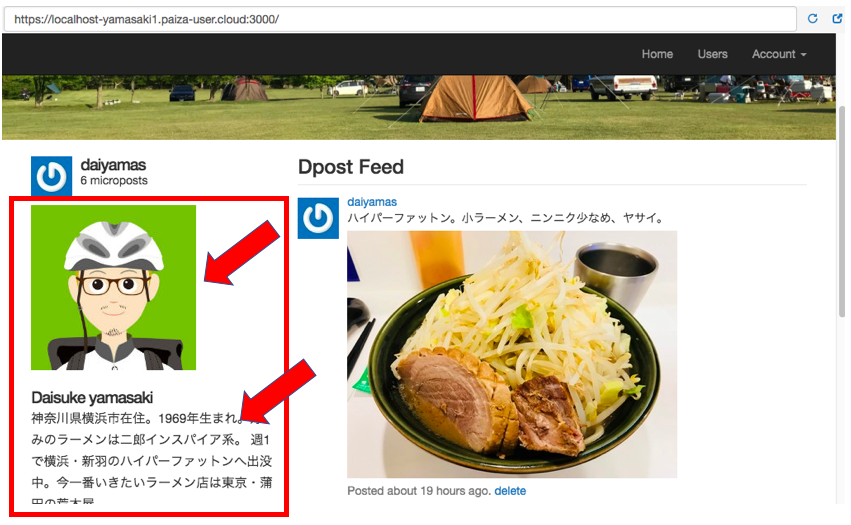
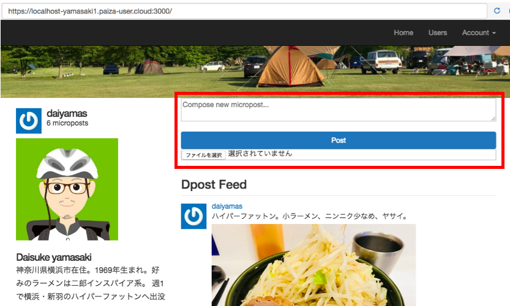

ユーザーページ左カラムにプロフィールを追加する方法。
キービジュアルの配置方法については、該当ファイルとソースの記述方法を習得することができました。 今回は、ユーザーページ内のbody要素内に配置されている2つのカラムの内、左カラム内にプロフィールを 追加してみたいと思います。要素はD-blog自己紹介ページでも使用しているイラストと、 簡単なプロフィールテキストの組み合わせです。
昨日の記事で確認できた通り、app/views/layouts/static_pages/home.html.erb ファイルがまず該当します。
<% if logged_in? %>
<div class="row">
<aside class="col-md-4">
<section class="user_info">
<%= render 'shared/user_info' %>
</section>
<section class="micropost_form">
<%= render 'shared/micropost_form' %>
</section>
</aside>
<div class="col-md-8">
<h3>Dpost Feed</h3>
<%= render 'shared/feed' %>
</div>
</div>
<% else %>
<div class="center jumbotron">
<h1>Welcome to the Dposts</h1>
<%= link_to "Sign up now!", signup_path, class: "btn btn-lg btn-primary" %>
</div>
<% end %>
5行目にある <%= render 'shared/user_info' %>の記述は、 app/views/shared/user_info.html.erbを読み込んでいます。 上記ファイルにプロフィール画像とテキストの記述を行えば、 ページに反映されるということ。早速、ソースを追加してみました。
<%= link_to gravatar_for(current_user, size: 50), current_user %>
<h1><%= current_user.name %></h1>
<span><%= pluralize(current_user.microposts.count, "micropost") %></span><br>
<%= link_to gravatar_for(current_user, size: 50), current_user %>
<h1><%= current_user.name %></h1>
<span><%= pluralize(current_user.microposts.count, "micropost") %></span><br>
<span><%= image_tag("profile.jpg", :class => "img-responsive") %></span><br>
<h1>Daisuke yamasaki</h1>
<p>神奈川県横浜市在住。1969年生まれ。好みのラーメンは二郎インスパイア系。
週1で横浜・新羽のハイパーファットンへ出没中。今一番いきたいラーメン店は東京・蒲田の荒木屋。</p>
サーバーを起動してD-postを起動してみたところ、追加した画像とテキストは問題なく表示されました。
投稿フォームを左カラムから右カラムへ移動する方法。
右カラムの記述は前述のソース10行目の <div class="col-md-8">以下が該当します。 この直下に投稿フォームのソースを貼り付けてみました。
<div class="col-md-8">
<h3>Dpost Feed</h3>
<%= render 'shared/feed' %>
</div>
<div class="col-md-8">
<section class="micropost_form">
<%= render 'shared/micropost_form' %>
</section>
<h3>Dpost Feed</h3>
<%= render 'shared/feed' %>
</div>
サーバーを起動してみたところ、投稿フォームは表示されましたが、キービジュアルとの余白がない状態で 表示されているため、margin-topの設定等が必要です。 
投稿フォームのソースはデベロッパーツールでチェックしたところ、「textarea」でCSS設定がされています。該当するファイルは custom.scssになります。ファイル内のソースを見るとmargin-topの指定がありませんでしたので、下記の通りmargin-topを15pxで指定しました。 問題なく表示されております。
/* forms */
input, textarea, select, .uneditable-input {
border: 1px solid #bbb;
width: 100%;
margin-bottom: 15px;
@include box_sizing;
}
/* forms */
input, textarea, select, .uneditable-input {
border: 1px solid #bbb;
width: 100%;
margin-bottom: 15px;
@include box_sizing;
}
textarea {
margin-top: 15px;
}
本日のミニ備忘録
D-postのカスタマイズに関しては、当初の計画をほぼ達成できました。カスタマイズ途中で仕様追加した キービジュアルをbackground-imageに、その上にテキスト配置の方法を調べていきます。